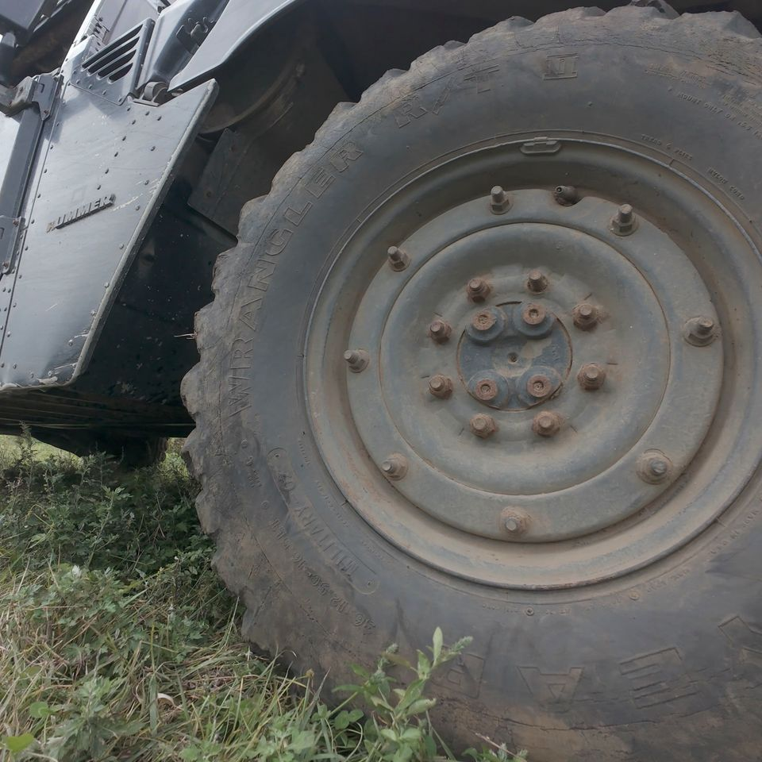
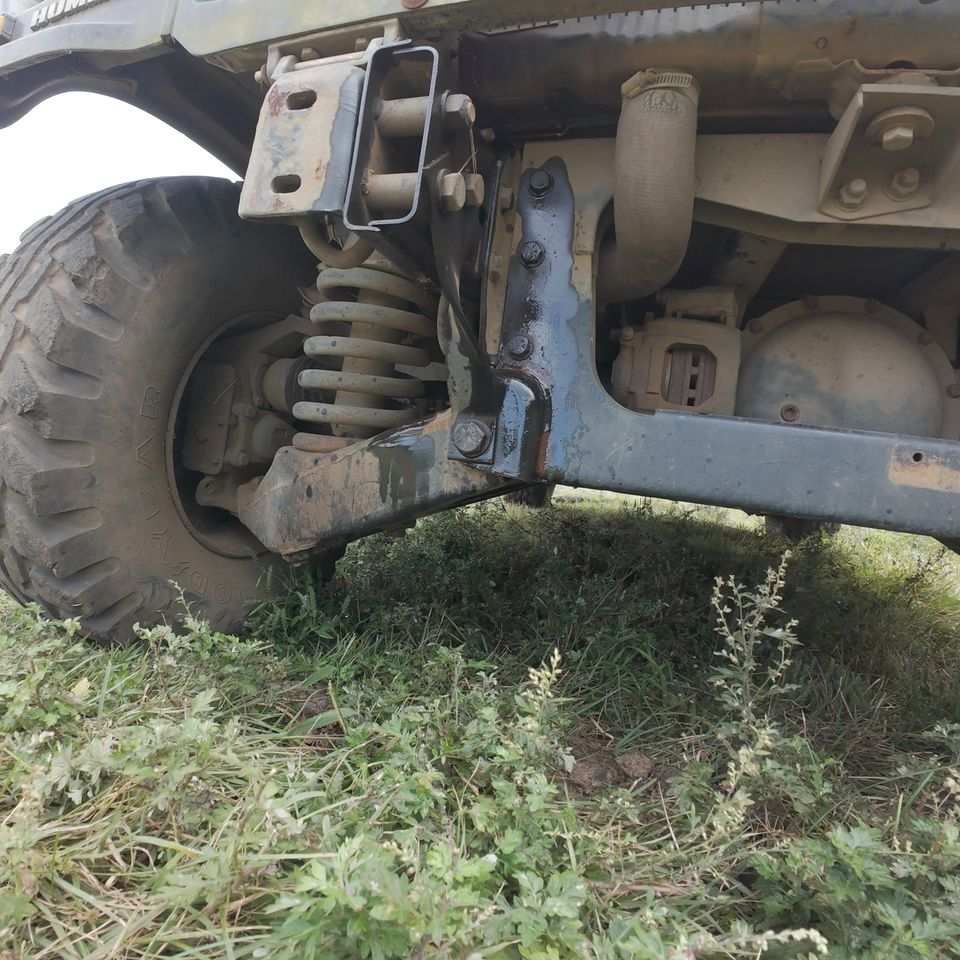
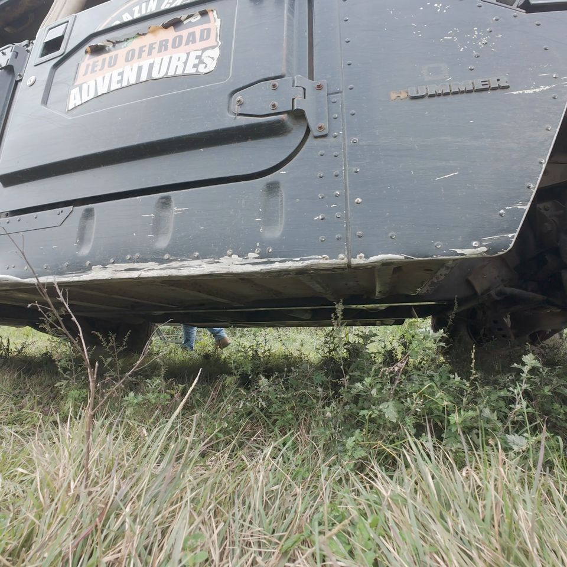
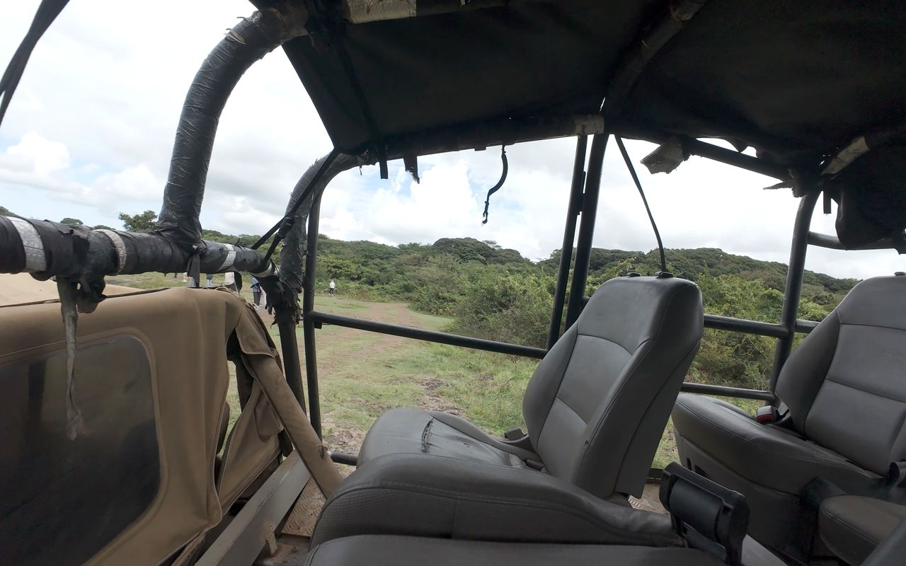
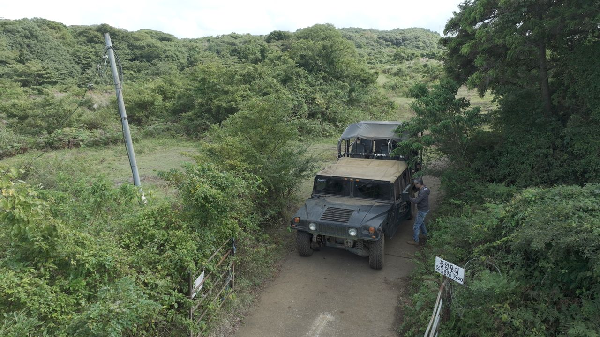

WHY THIS CAR
군용으로 태어나
곶자왈을 달립니다
험비는 원래 사람을 태우기 위해 만든 차가 아닙니다. 길이 없는 곳을 지나가기 위해 만든 차입니다. 그 혈통 그대로, 제라진의 험머 H1은 포장되지 않은 흙길과 돌길, 비 온 뒤의 진흙 구간을 아무렇지 않게 통과합니다.
시동을 거는 순간의 디젤 엔진음, 시트를 타고 올라오는 진동, 성인 허리 높이의 타이어. 타기 전에는 압도되고, 타고 나면 웃게 되는 차입니다.
- 폭이 넓고 무게 중심이 낮다험지에서의 안정감
- 거대한 타이어와 높은 지상고돌·웅덩이 구간 통과
- 개방형 캐빈달리는 내내 바람과 소리가 그대로

SPECIFICATION
제원과 탑승 조건
| 제조사 | |
|---|---|
| 특징 | |
| 엔진 | |
| 최고출력 | |
| 구동방식 | |
| 전장×전폭×전고 | |
| 타이어 | |
| 최저 지상고 | |
| 탑승 정원 |
이 차량 탑승 조건
- 연령 이상 ·
- 신장 이상 탑승 제한
- 체중 이상 탑승 제한
- 건강임산부 · 심혈관 질환 · 척추/관절 질환자 탑승 제한
- 운전
- 복장진흙·먼지가 묻습니다. 갈아입을 옷을 권합니다
일반 차량보다 차체가 높아 승하차 시 스태프가 보조합니다. 거동이 불편하신 분은 예약 전 전화로 문의해 주세요.
DETAILS
가까이서 봅니다





360° 차량 뷰 자리 — 드래그해서 돌려보는 인터랙티브
360° 차량 뷰
차량을 한 바퀴 돌며 촬영한 이미지 시퀀스로 외관을 직접 돌려볼 수 있게 합니다. 예약 전 차량 크기를 체감하는 것이 전환율에 가장 크게 작용합니다.
※ 차량 전용 디테일 촬영은 추가 촬영 항목입니다.

THE COURSE
이 차로 달리는
한초이 마스터가 설계한 개 익스트림 구간을 그대로 통과합니다. 초원 질주 → 곶자왈 돌파 → 포토타임 → 한라마 조우 → 급경사·진흙 구간. 험비는 덩치 때문에 좁은 구간에서 더 극적인 각도가 나옵니다.